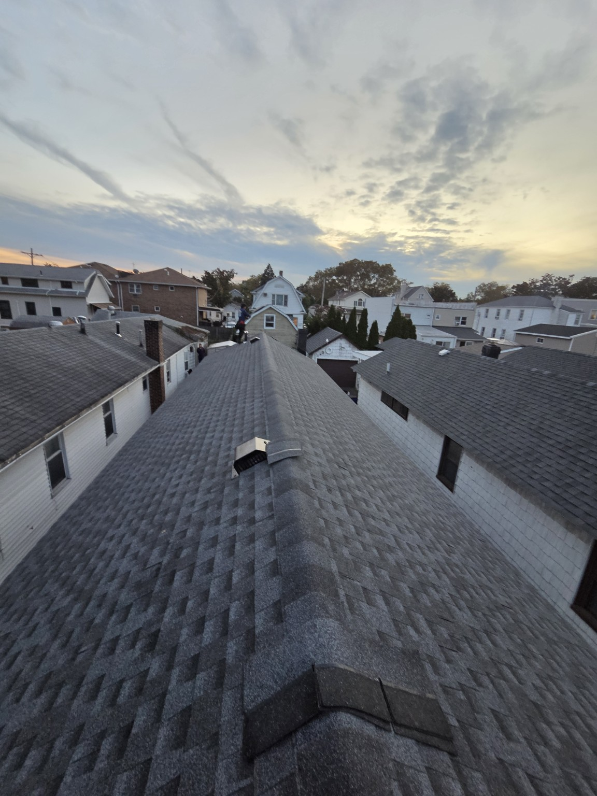

★★★★★
“They were professional, honest, punctual”Excerpt · Read reviews on Google →
Professional roof repair, replacement & installation services throughout The Bronx. From Grand Concourse to Riverdale, we protect your home against NYC's harsh weather.
Comprehensive roofing solutions for Bronx homeowners and property managers

Fast, reliable repairs for leaks, damaged shingles, and storm damage. We service all roof types common in The Bronx.

Complete roof replacement for older brick buildings, pre-war architecture, and modern homes throughout the Bronx.

Expert flat roof services using torch-down, EPDM, and TPO systems ideal for Bronx multi-family buildings.

Protect your property from water damage with our professional waterproofing solutions for flat roofs and foundations.

Complete gutter installation, repair, and siding services to complete your Bronx property's exterior.

Emergency roofing services during our business hours for urgent situations. We respond quickly to protect your Bronx property.
We understand the unique challenges of roofing in The Bronx
Our team has extensive experience working with older brick buildings and pre-war architecture common throughout The Bronx, from Grand Concourse to Fordham Road.
The Bronx experiences tough winters. We install proper insulation and ventilation systems to prevent ice dams and snow damage that plague flat roofs in this area.
We service all areas including Riverdale, Pelham Bay, Fordham, Tremont, Morris Park, and along the Grand Concourse. No job is too far!
NY LIC 2119788-DCWP, fully insured with 15+ years of experience. We handle all NYC building department requirements.
CUSTOMER EXPERIENCES
★★★★★
“They were professional, honest, punctual”Excerpt · Read reviews on Google →
★★★★★
“their team was professional, reliable, and extremely knowledgeable.”Excerpt · Read reviews on Google →
★★★★★
“I am extremely happy with my new roof”Excerpt · Read reviews on Google →
Selected Google review excerpts. Rating and review count checked October 19, 2026.
View all Google reviews →Costs vary based on size, materials, and roof type. For Bronx properties, flat roof replacements typically range from $8,000-$20,000, while shingle roofs range from $12,000-$30,000. We provide free estimates.
Yes! We have extensive experience with older brick buildings common throughout the Bronx. We understand the unique structural considerations and NYC building codes for historic properties.
Signs include persistent leaks, ponding water, cracked or blistered membranes, and visible wear around flashings. Our free inspection will assess your roof's condition and recommend the best solution.
Absolutely. We have extensive experience working with insurance companies for storm damage claims. We can document damage, provide estimates, and work with your adjuster.
Get a free roof inspection and estimate from our expert team. We serve all Bronx neighborhoods!
FROM OUR BRONX PROJECTS
See GAF Timberline HDZ shingles in Charcoal, from roof preparation to the finished result.
View all four project photos →